Chapter 3 · Part 1 — Mini-Sub
“You’ve really done it now, Annie!” said Jack.
“Sorry, sorry. But look out the window!” Annie said. “Look!”
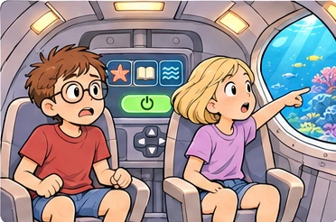
“Forget it! We have to figure this out!” Jack at the computer. He saw a row of pictures at the top of the screen.
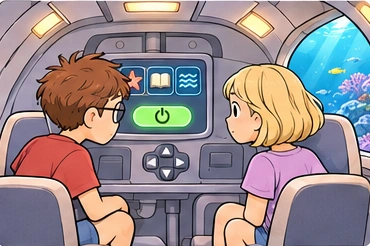
“What did you do?” he asked.
“I just pressed the ON ,” said Annie.
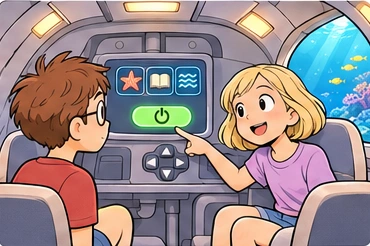
“The screen lit up. And I pressed the starfish.”
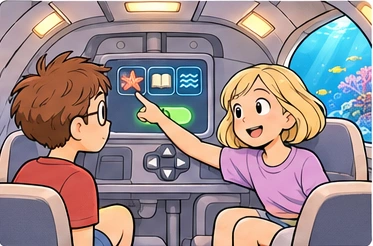
“That must be the command to go under the water,” said Jack.
“Yeah. Then the map came on,” said Annie.
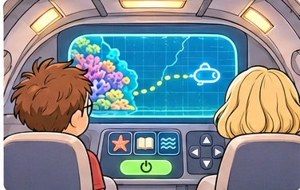
“Okay, okay. The map shows the ,” said Jack. “Look! There’s the on the map! It’s moving away from the .”
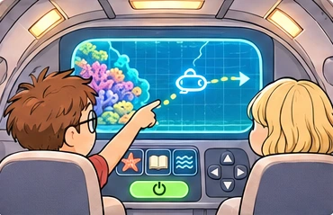
“It’s like a video game,” said Annie. “I bet I know what to do.”
Annie pressed a key with an arrow pointing right. The on the screen moved right. The real turned to the right, also.
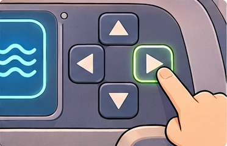
“Great!” said Jack with relief. “You press the arrows to steer the . So now we can go back.”
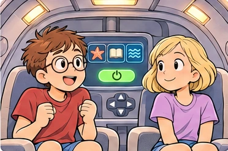
“Oh, no, not right away,” said Annie. “It’s so beautiful down here.”
“We have to get back to the ,” said Jack. His eyes were still glued to the computer screen. “What if the owners find it gone?”
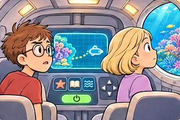
“Look out the window,” said Annie. “Just for one teeny second.”
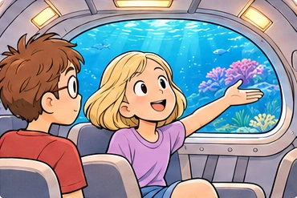
Jack sighed. He pushed his glasses into place and looked up. “Oh, man,” he said softly.
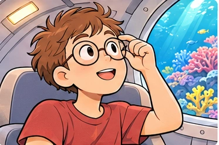
Outside the glass was a strange world of bright moving color.
It looked like another planet.
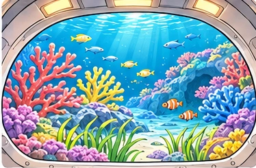
The was moving past red, yellow, and blue —past little mountains, valleys, and caves—past fishes of every color and size.
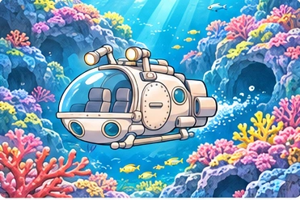
“Can’t we stay a little while? The answer to Morgan’s must be here,” said Annie.
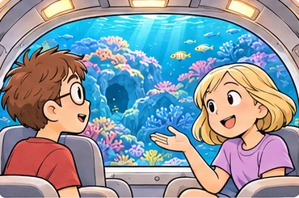
Jack nodded slowly. She might be right, he thought. Besides, when would they ever get to visit a place like this again?
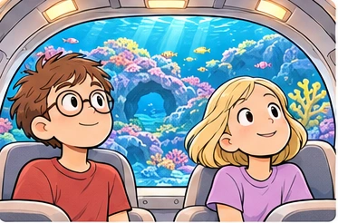